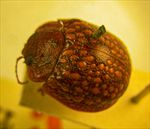
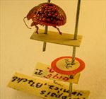
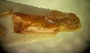
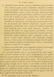

Click on images to enlarge
.jpg){kind=link}

Fig. 1. Paropsis vomica type specimen
.jpg){kind=link}

Fig. 2. Paropsis vomica, type specimen and labels
{kind=link}

Fig. 3. Paropsis vomica, aedeagus (not from type specimen)
{kind=link}

Fig. 4. Paropsis vomica, description
Name
Paropsis vomica Blackburn, 1896
Corresponds to
Diagnosis and Notes
Blackburn (1896) deals with vomica as part of his 'subgroup iii' (i.e., those species without "strongly marked characters", whose greatest height is not or scarcely in front of the middle of the elytral margin and whose elytra are not depressed under the humeral callus). Within that group, he characterises it as:
(1) no postbasal impression on disc of elytra;
(2) elytral verrucae conspicuously paler in colour than the general surface;
(3) form subcircular and strongly convex.
This is certainly the same species as Ta134. Individuals of are almost identical morphologically to the better known, eastern Australian species, T. echo (= Ta39), and are very likely conspecific with it. Despite this close similarity, when describing T. echo, Blackburn (1901) made no reference at all to T. vomica either in the description or the accompanying notes and placed T. echo in his "Group ii" of the genus rather than "Group iii" (as for vomica).
Type specimen
Location: BMNH
Label data: /“Type” (red-bordered circle)/ “6195 T N.W.A.”/ “Blackburn coll. 1910-236.”/ “Paropsis vomica Blackb.”/.
Male; Size: 8.7 (L) x 7.3 (W) x 4.1 (H) mm; A-A: 1.51 mm.
A second specimen at BMNH is clearly of the same species. Its labels are: /"1215"/ "Roebuck Bay 9L-49"[?]/. Size: 9.15 (L) x 7.6 (W) x 4.15 (H) mm. Its aedeagus (Fig. 3) has been extracted at some time in the past, its LPE=3.1 mm.
Original description
[Original description shown in figure, translated from Latin using ChatGPT, 04/2026]
♂. Very broadly oval; strongly convex, the greatest height (seen from the side) situated anterior to the middle of the elytral margin; moderately shining; reddish-brown, the verrucae of the elytra testaceous or yellowish, the underside of the body for the most part pitchy. Head rather closely and roughly punctulate. Prothorax broader than long as 2⅖ to 1, broadened from the apex to a little beyond the middle, behind the apex scarcely transversely impressed, rather closely doubly (finely and rather strongly, at the sides coarsely) punctulate; sides moderately arcuate, broadly and distinctly flattened; posterior angles rounded. Scutellum almost smooth. Elytra not depressed beneath the humeral callus, not impressed behind the base, more finely and scarcely serially (at the sides scarcely more coarsely) punctulate; furnished with large, numerous, somewhat weakly elevated verrucae arranged in rows; interstices slightly rugulose; marginal portion not clearly distinct from the disc (except toward the apex); the inner margin of the humeral callus a little more distant from the suture than from the lateral margin of the elytra. Basal ventral segment almost smooth. Third antennal segment rather longer than the fourth.
♀. Slightly less broad than the male, the apical ventral segment more distinctly punctured.
Length 4–4⅕ lines [~8.5-8.9 mm], width 3½ lines [~7.4 mm].
References
Blackburn, T. 1896, "Revision of the genus Paropsis. Part I", Proceedings of the Linnean Society of New South Wales, vol. 21, no. 4, 637-693 (page 693).
Copyright © 2026. All rights reserved.